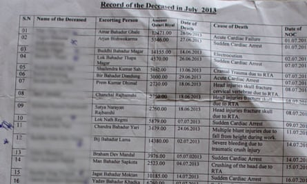
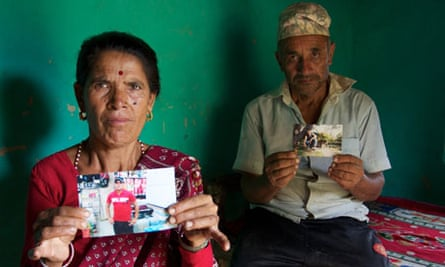

Dozens of Nepalese migrant labourers have died in Qatar in recent weeks and thousands more are enduring appalling labour abuses, a Guardian investigation has found, raising serious questions about Qatar’s preparations to host the 2022 World Cup.
This summer, Nepalese workers died at a rate of almost one a day in Qatar , many of them young men who had sudden heart attacks. The investigation found evidence to suggest that thousands of Nepalese, who make up the single largest group of labourers in Qatar, face exploitation and abuses that amount to modern-day slavery, as defined by the International Labour Organisation, during a building binge paving the way for 2022.
According to documents obtained from the Nepalese embassy in Doha, at least 44 workers died between 4 June and 8 August. More than half died of heart attacks, heart failure or workplace accidents.
The investigation also reveals:
Evidence of forced labour on a huge World Cup infrastructure project.
Some Nepalese men have alleged that they have not been paid for months and have had their salaries retained to stop them running away.
Some workers on other sites say employers routinely confiscate passports and refuse to issue ID cards, in effect reducing them to the status of illegal aliens.
Some labourers say they have been denied access to free drinking water in the desert heat.
About 30 Nepalese sought refuge at their embassy in Doha to escape the brutal conditions of their employment.
The allegations suggest a chain of exploitation leading from poor Nepalese villages to Qatari leaders. The overall picture is of one of the richest nations exploiting one of the poorest to get ready for the world’s most popular sporting tournament.
“We’d like to leave, but the company won’t let us,” said one Nepalese migrant employed at Lusail City development, a $45bn (£28bn) city being built from scratch which will include the 90,000-seater stadium that will host the World Cup final. “I’m angry about how this company is treating us, but we’re helpless. I regret coming here, but what to do? We were compelled to come just to make a living, but we’ve had no luck.”
The body tasked with organising the World Cup, the Qatar 2022 Supreme Committee, told the Guardian that work had yet to begin on projects directly related to the World Cup. However, it said it was “deeply concerned with the allegations that have been made against certain contractors/sub-contractors working on Lusail City’s construction site and considers this issue to be of the utmost seriousness”. It added: “We have been informed that the relevant government authorities are conducting an investigation into the allegations.”
The Guardian’s investigation also found men throughout the wider Qatari construction industry sleeping 12 to a room in places and getting sick through repulsive conditions in filthy hostels. Some say they have been forced to work without pay and left begging for food.
“We were working on an empty stomach for 24 hours; 12 hours’ work and then no food all night,” said Ram Kumar Mahara, 27. “When I complained, my manager assaulted me, kicked me out of the labour camp I lived in and refused to pay me anything. I had to beg for food from other workers.”
Almost all migrant workers have huge debts from Nepal, accrued in order to pay recruitment agents for their jobs. The obligation to repay these debts, combined with the non-payment of wages, confiscation of documents and inability of workers to leave their place of work, constitute forced labour, a form of modern-day slavery estimated to affect up to 21 million people across the globe. So entrenched is this exploitation that the Nepalese ambassador to Qatar, Maya Kumari Sharma, recently described the emirate as an “open jail” .
Record of deaths in July 2013, from all causes, held by the Nepalese embassy in Doha. Photograph: /guardian.co.uk
“The evidence uncovered by the Guardian is clear proof of the use of systematic forced labour in Qatar,” said Aidan McQuade, director of Anti-Slavery International, which was founded in 1839. “In fact, these working conditions and the astonishing number of deaths of vulnerable workers go beyond forced labour to the slavery of old where human beings were treated as objects. There is no longer a risk that the World Cup might be built on forced labour. It is already happening.”
Qatar has the highest ratio of migrant workers to domestic population in the world: more than 90% of the workforce are immigrants and the country is expected to recruit up to 1.5 million more labourers to build the stadiums, roads, ports and hotels needed for the tournament. Nepalese account for about 40% of migrant labourers in Qatar. More than 100,000 Nepalese left for the emirate last year.
The murky system of recruitment brokers in Asia and labour contractors in Qatar leaves them vulnerable to exploitation. The supreme committee has insisted that decent labour standards will be set for all World Cup contracts, but underneath it a complex web of project managers, construction firms and labour suppliers, employment contractors and recruitment agents operate.
According to some estimates, Qatar will spend $100bn on infrastructure projects to support the World Cup. As well as nine state-of-the-art stadiums, the country has committed to $20bn worth of new roads, $4bn for a causeway connecting Qatar to Bahrain, $24bn for a high-speed rail network, and 55,000 hotel rooms to accommodate visiting fans and has almost completed a new airport.
The World Cup is part of an even bigger programme of construction in Qatar designed to remake the tiny desert kingdom over the next two decades. Qatar has yet to start building stadiums for 2022, but has embarked on the big infrastructure projects likesuch as Lusail City that, according to the US project managers, Parsons, “will play a major role during the 2022 Fifa World Cup”. The British engineering company Halcrow, part of the CH2M Hill group, is a lead consultant on the Lusail project responsible for “infrastructure design and construction supervision”. CH2M Hill was recently appointed the official programme management consultant to the supreme committee. It says it has a “zero tolerance policy for the use of forced labour and other human trafficking practices”.
Halcrow said: “Our supervision role of specific construction packages ensures adherence to site contract regulation for health, safety and environment. The terms of employment of a contractor’s labour force is not under our direct purview.”
Some Nepalese working at Lusail City tell desperate stories. They are saddled with huge debts they are paying back at interest rates of up to 36%, yet say they are forced to work without pay.
“The company has kept two months’ salary from each of us to stop us running away,” said one man who gave his name as SBD and who works at the Lusail City marina. SBD said he was employed by a subcontractor that supplies labourers for the project. Some workers say their subcontrator has confiscated their passports and refused to issue the ID cards they are entitled to under Qatari law. “Our manager always promises he’ll issue [our cards] ‘next week’,” added a scaffolder who said he had worked in Qatar for two years without being given an ID card.
Without official documentation, migrant workers are in effect reduced to the status of illegal aliens, often unable to leave their place of work without fear of arrest and not entitled to any legal protection. Under the state-run kafala sponsorship system, workers are also unable to change jobs or leave the country without their sponsor company’s permission.
A third worker, who was equally reluctant to give his name for fear of reprisal, added: “We’d like to leave, but the company won’t let us. If we run away, we become illegal and that makes it hard to find another job. The police could catch us at any time and send us back home. We can’t get a resident permit if we leave.”
Other workers said they were forced to work long hours in temperatures of up to 50C (122F) without access to drinking water.
Dalli Kahtri and her husband, Lil Man, hold photos of their sons, both of whom died while working as migrants in Malaysia and Qatar. Their younger son (foreground photo) died in Qatar from a heart attack, aged 20. Photograph: Peter Pattison/guardian.co.uk
The Qatari labour ministry said it had strict rules governing working in the heat, the provision of labour and the prompt payment of salaries.
“The ministry enforces this law through periodic inspections to ensure that workers have in fact received their wages in time. If a company does not comply with the law, the ministry applies penalties and refers the case to the judicial authorities.”
Lusail Real Estate Company said: “Lusail City will not tolerate breaches of labour or health and safety law. We continually instruct our contractors and their subcontractors of our expectations and their contractual obligations to both us and individual employees. The Guardian have highlighted potentially illegal activities employed by one subcontractor. We take these allegations very seriously and have referred the allegations to the appropriate authorities for investigation. Based on this investigation, we will take appropriate action against any individual or company who has found to have broken the law or contract with us.”
The workers’ plight makes a mockery of concerns for the 2022 footballers.
“Everyone is talking about the effect of Qatar’s extreme heat on a few hundred footballers,” said Umesh Upadhyaya, general secretary of the General Federation of Nepalese Trade Unions. “But they are ignoring the hardships, blood and sweat of thousands of migrant workers, who will be building the World Cup stadiums in shifts that can last eight times the length of a football match.”
Read the official response to this story